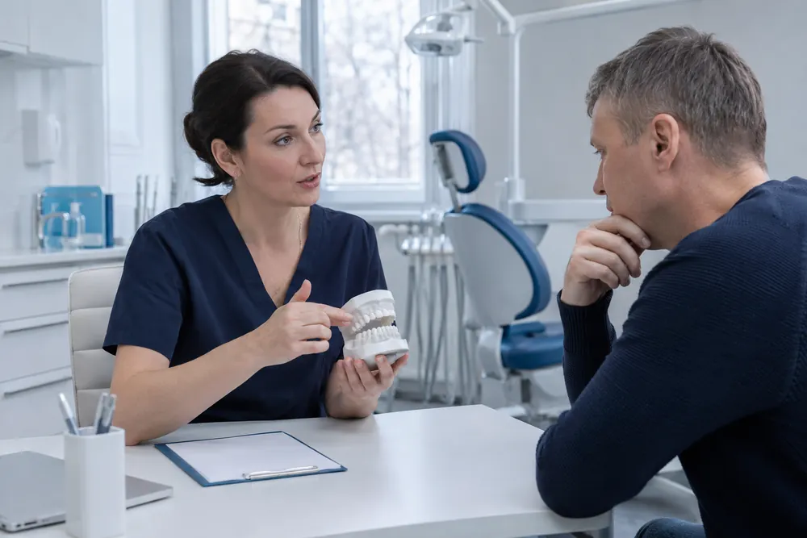

Продажи в стоматологии: как пациент соглашается на лечение
Слово «продажи» в медицине многим не нравится, и справедливо: навязывать лечение нельзя. Но пациент, которому не объяснили, что с его зубами и сколько стоит лечение, уходит думать и не возвращается. Продажи в стоматологии это умение объяснить и довести до решения, а не уговорить.

Чем продажи в стоматологии отличаются от обычных
- Пациент не может оценить качество. Он судит по тому, как с ним говорили и насколько всё было понятно.
- Решение принимается от страха и недоверия. Страх боли, страх цены, страх, что «разводят».
- Навязывать нельзя. Лечение назначается по показаниям, а пациент даёт на него информированное согласие.
- Цикл длинный. От первой консультации до окончания имплантации проходят месяцы, и на каждом этапе пациент может уйти.
Этапы продаж в стоматологии
| Этап | Кто отвечает | Что должно произойти |
|---|---|---|
| Первое обращение | Администратор | Человек получил ответ на вопрос и записался на удобное время |
| Встреча в клинике | Администратор | Пациента ждали, документы оформлены без суеты |
| Консультация | Врач | Пациент понял, что с его зубами и какие есть варианты |
| План лечения | Врач и куратор | Этапы, сроки и цена каждого этапа на бумаге |
| Решение и оплата | Куратор или администратор | Обсудили порядок оплаты, рассрочку, записали на первый этап |
| Лечение | Врач | На каждом визите понятно, что сделано и что дальше |
| После лечения | Администратор | Осмотр через полгода, отзыв, рекомендация знакомым |
Консультация: что должен услышать пациент
- Что происходит сейчас. Простыми словами, со снимком или фотографией.
- Что будет, если ничего не делать. Без запугивания, по фактам.
- Какие есть варианты. Обычно два или три, с плюсами и минусами каждого.
- Что врач рекомендует и почему.
- Сколько это займёт времени и визитов.
Ошибка врача: рассказывать о технологиях вместо того, чтобы отвечать на вопрос пациента. Ошибка клиники: отправлять человека домой со словами «цену посчитаем и позвоним».
План лечения как инструмент продажи
В связке «план лечения, стоматология, продажа» главное слово первое. Хороший план лечения отвечает на вопросы, которые пациент задаст себе дома.
- Этапы по порядку. Что делаем сначала и почему.
- Цена каждого этапа. И общая сумма, чтобы не было сюрпризов.
- Сроки. Сколько визитов, какие перерывы между этапами.
- Варианты. Например, мост или имплант, с ценой каждого.
- Что срочно, а что может подождать. Пациенту легче начать с первого этапа, чем решиться на всё сразу.
- Порядок оплаты. По этапам, рассрочка, налоговый вычет.
План выдают на руки в день консультации. Через три или четыре дня пациенту звонят: не «вы надумали?», а «остались ли вопросы по плану, который составил доктор».
Возражения
- «Дорого». Чаще значит «не понял, за что». Вернитесь к плану: что входит, что можно отложить, как платить по этапам.
- «Я подумаю». Уточните, что именно нужно обдумать: цену, сроки, сам метод. Договоритесь о дне, когда созвонитесь.
- «В другой клинике дешевле». Предложите сравнить планы по составу: что входит в цену там и здесь.
- «Боюсь». Это вопрос к врачу: какая анестезия, что будет ощущаться, как пройдёт восстановление.
Что считать
- долю записей от обращений;
- долю пришедших от записанных;
- долю принятых планов лечения по каждому врачу;
- долю пациентов, начавших и закончивших лечение;
- долю вернувшихся на осмотр.
Подробнее о показателях в статье о воронке пациентов, о разговоре по телефону в статье о скриптах администратора.
Управление стоматологией: кто за что отвечает
Продажи нельзя поручить одному человеку. Управление стоматологией в этой части сводится к четырём вещам: у каждого этапа есть ответственный, есть регламент разговора и выдачи плана, цифры по этапам собираются каждую неделю, а раз в месяц руководитель разбирает их с врачами и администраторами. Обучение управлению стоматологией стоит начинать именно с этих цифр: по ним видно, чему учить команду в первую очередь.
Привлекаем пациентов на услуги с высоким чеком и считаем записи вместе с клиникой: Комплексный маркетинг для стоматологии.